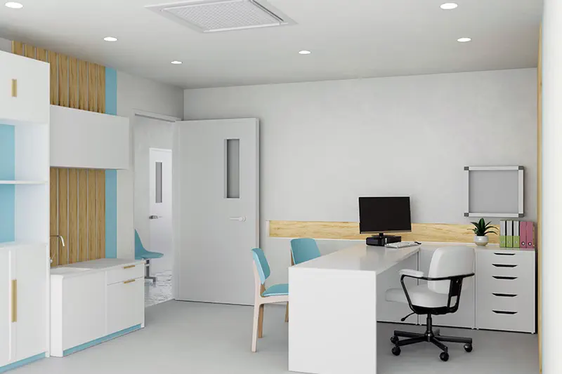

Situé à Oujda – Rue Al Andalous, Bâtiment Essaâda, Étage 2, Appartement
6
Prise de rendez-vous sur place ou par téléphone
Horaires : Du lundi au vendredi de 09h à 19h – Le samedi de 09h à 13h
Notre cabinet médical vous accueille pour tous vos besoins de santé générale : suivi régulier, maladies courantes, certificats médicaux, orientation vers spécialistes si besoin.
Nous nous engageons à offrir un service de qualité, accessible et à l’écoute, dans un environnement professionnel, au cœur de la ville d’Oujda.
